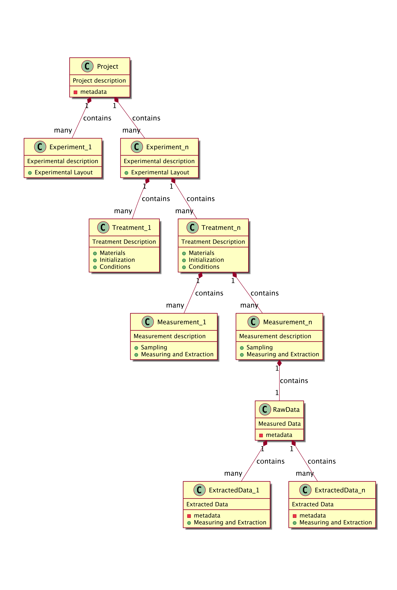

Github site https://github.com/Exp-Micro-Ecol-Hub/emeScheme
Introduction
This scheme will provide a framework for describing aquatic microcosm experiments in the sense as used in the papers in the References section.
This scheme aims to cover the following aspects:
- Materials: these include instrumentation, species, cultures, …
- Initialization: run in time, treatment, conditions
- Conditions / Manipulations: different conditions for the different treatments and manipulations, conditions, transplantations, …
- Sampling (how much is taken from microcosms and how much is re-filled with what and how often, …)
- Measuring of the raw data (video, images, count, …) using different methodologies and their instrumentations, protocols, …
- Extraction of the needed measure (density, …) from the measured raw data (if needed) and the software, versions, parameter used (e.b. bemovi)
By using this metadata one should be able to successfully re-generate the data.
This scheme does not aim to cover aspects of the actual analysis of this data with the aim of answering specific questions.
Experimental Microbial Ecology Protocols
In the supplement to their paper to their paper, Altermatt et al. (2015) specify the following sections for a protocoll. The sections are as followed:
1. Materials
1.1 Species used
1.2 Culture medium
1.3 Bacteria
1.4 Apparatus
1.5 Lab practices
1.6 Long term maintenance
1.7 Long term preservation
2. Measurements
2.1 Sampling
2.2 Microscopy
2.3 Image analysis
2.4 Particle counter
2.5 Bacterial density
2.6 Raman microspectroscopy
2.7 Barcoding
2.8 Ge-, prote- and epigenomics
2.9 Respirometry
2.10 Nutrients and decomposition
2.11 Protocol unavailable
2.12 Interactions
3. Manipulations
3.1 Protocol unavailable
3.2 Density
3.3 Disturbance
3.4 Nutrients and viscosity
3.5 Spatial structure
3.6 temperature
3.7 Biotic environmentWe use these sections as a starting point to define a metadata scheme to describe the microcosm experiment.
From Project to Dataset - how the emeScheme fits in

The emeScheme
The sections in the Experimental Microbial Ecology Protocols were supplemented and assessed by reviewing the methods in the papers in the References section below.
This document was than re-ordered and thinned which resulted in the initial verions of the Google Doc Sheet.
Here we describe the different properties of the emeScheme We will start at the first level and go deeper into the different properties.
The working copy can be found on a Google Doc Sheet.
Current Structure
The properties follow these conventions:
- Properties in starting with a capital letters (in Blue) are property sets, containing either other property sets or other value properties, but not both.
- Properties starting with a small letter (in black) are value properties, containing values. They follow the format PropertyName (unit) [type].
- Unit is the unit of the value (e.g. l, rpm, …)
- type is the type of the value. Possible values are integer, numeric, logical, and, the default, character. This is used as the data type in R.
- all value properties in one property set have to have the same number of entries, separated by a comma.
- in some value properties several entries belong together and are considered one meta data point (e.g. parameterUsed in VideoAnalysis. These entries are separated by a semicolon, and will only be split during the export ot the xml file.
- No properties are mandatory!
- Some properties are repeatable TODO: Needs to be specified!
A property set which contains value properties must be seen as tables and must therefore have the same number of entries for each value property.
The structure as at 2019-01-08 12:46:14 GMT is as followed:
| Property_Level_1 | Property_Level_2 | Property_Level_3 | Property_Level_4 | Example Data |
|---|---|---|---|---|
| Experiment | ||||
| ExperimentalDesign | ||||
| noTreatments (count) [integer] | 3 | |||
| noReplicatesPerTreatment (count) [integer] | 10 | |||
| description | This is a great experiment | |||
| Materials | ||||
| Incubators | ||||
| makeTypeVersion | Hyper Incubator 2000 | |||
| comment | bought on ebay | |||
| Container | ||||
| type | bottle | |||
| volume (ml) [numeric] | 200 | |||
| covers | foil | |||
| Shakers | ||||
| makeTypeVersion | Krups | |||
| speed (rpm) [integer] | 3000 | |||
| Species | ||||
| species | tarantula maximus, elephantus minimus | |||
| strain | yellow, green | |||
| source | ebay, amazon | |||
| density (cells/ml) [numeric] | 122, 500 | |||
| CultureMedium | ||||
| volume (ml) [numeric] | 150 | |||
| type | Ultimate growth | |||
| BacteriaFlagellates | ||||
| species | little things | |||
| strain | actually no idea | |||
| sourcePellet | also ebay | |||
| LabPractices | ||||
| description | very good | |||
| comment | do I have to say more? | |||
| LongTermMaintenance | ||||
| description | no idea | |||
| comment | nothing to say here | |||
| LongTermPreservation | ||||
| description | freezer | |||
| comment | -80 | |||
| Initialization | ||||
| InitialConditions | ||||
| description | same temperature | |||
| runInTime (hours) [integer] | 240 | |||
| Temperature | ||||
| temperature (C) [numeric] | 20 | |||
| temperatureRange (C) | 0 | |||
| temperatureChangeRate | 0 | |||
| Light | ||||
| intensity (lx) [numeric] | 500 | |||
| colour (nm) [integer] | 650 | |||
| photoperiod (h) [numeric] | 12 | |||
| FinalConditions | ||||
| description | green glow | |||
| comment | nice - isn’t it? | |||
| Treatment | ||||
| DuringExperimentMaintenance | ||||
| description | lot’s of work | |||
| comment | not another one | |||
| SpeciesArrangement | ||||
| noOfSpecies (count) [integer] | 2 | |||
| interaction | food web or competition or etc | |||
| SpeciesTreatment | ||||
| species | tarantula maximus, elephantus minimus | |||
| initialDensity (cells/ml) [numeric] | 100, 200 | |||
| densityChanges | 0, 0 | |||
| ecologicalRoleInTreatment | prey, predator | |||
| BacteriaFlagellatesTreatment | ||||
| species | little things | |||
| initial density | 500 | |||
| densityChanges | 5 | |||
| TemperatureTreatment | ||||
| temperature (C) [numeric] | 25 | |||
| temperatureRange (C) | 20-30 | |||
| temperatureChangeRate | daily fluctuations | |||
| LightTreatment | ||||
| intensity (lx) [numeric] | 1000 | |||
| colour (nm) [numeric] | 650 | |||
| photoperiod (h) [numeric] | 20 | |||
| Dispersal | ||||
| spatialStructure | triangular tubes | |||
| change | daily random changes | |||
| NutrientTreatment | ||||
| changeInTreatment | ad lib | |||
| comment | do I have to sayt more? | |||
| Viscosity | ||||
| description | like mustard | |||
| comment | hot mustard | |||
| BioticEnvironment | ||||
| type | green | |||
| value | 55 | |||
| change | constant | |||
| Disturbance | ||||
| description | weekly introduction of bottle necks | |||
| comment | dilution of 90% | |||
| Sampling | ||||
| frequency (daysBetweenSamples) [numeric] | 3 | |||
| noOfSamples (count) [integer] | 100 | |||
| samplingTimeLength (days) [integer] | 300 | |||
| volume (ml) [numeric] | 20 | |||
| replacementMediumType | same | |||
| Measuring | ||||
| Microscopy | ||||
| volume (ml) [numeric] | 10 | |||
| preparation | colour sample with whatever | |||
| typeOfMicroscope | nice one | |||
| microscopyMethod | dark field | |||
| comment (e.g.Species) | counting elephants | |||
| VideoRecording | ||||
| volume (ml) [numeric] | 10 | |||
| preparation | nothing in particular | |||
| microscope | nice one | |||
| magnification (times) [numeric] | 100 | |||
| camera | supercom 4000 | |||
| microscopyMethod | light and such stuff | |||
| resolution (XxY) | 5000x10000 | |||
| colourSpace | green | |||
| lengthOfRecording (sec) [numeric] | 10 | |||
| frameRate (perSecond) [integer] | 50 | |||
| lightIntensity (lx) [numeric] | 2000 | |||
| lightColour (nm) [numeric] | 333 | |||
| videoFormat | avi | |||
| comment (e.g.species) | nothing interesting here to read | |||
| FlowCam | ||||
| makeTypeVersion | A nice one model 999, and another model | |||
| settingsParameter | a = 1; cc = 33; x = 4, a = 11; dd = 44; x = 5 | |||
| volume (ml) [numeric] | 10, 20 | |||
| treatment | nothing | |||
| BacterialDensityFlowcytometry | ||||
| typeVersion | a better one Modell 53rf9 | |||
| volume (ml) [numeric] | 20 | |||
| settingsParameter | tgp = 1; ccp = 33; y = 4 | |||
| treatment | noyhing | |||
| DNABarcoding | ||||
| description | complicated | |||
| comment | no idea | |||
| Respirometry | ||||
| description | also complicated | |||
| moreDetailsNeeded | so what shoiuld I put here? | |||
| NutrientsDecomposition | ||||
| description | something I don’t know about | |||
| comment | but somebody knows | |||
| DataExtraction | ||||
| MicroscopyAnalysis | ||||
| description | counting and calculation of density | |||
| comment | difficult counting | |||
| VideoAnalysis | ||||
| analysisMethod | bemovi, bemovi 2 | |||
| parameterUsed | a = 1; b = 2; c = 3; x = 35, a = 10; b = 3; y = 9999 | |||
| FlowCamAnalysis | ||||
| description | easy | |||
| comment | nothing | |||
| BacterialDensityFlowcytometryAnalysis | ||||
| description | so what is this? | |||
| comment | no idea what to put here | |||
| ParticleCounterAnalysis | ||||
| description | and another method | |||
| comment | also nothing | |||
| RamanMicrospectroscopyAnalysis | ||||
| description | what is this? | |||
| comment | good question | |||
| DNABarcodingAnalysis | ||||
| description | very complicated as well | |||
| comment | nothing | |||
| GenProteoEpigenomicsAnalysis | ||||
| description | even worse | |||
| comment | no idea | |||
| RespirometryAnalysis | ||||
| description | some stats | |||
| comment | and sums | |||
| NutrientsDecompositionAnalysis | ||||
| description | much less afterwards | |||
| comment | something nice | |||
| InteractionsAnalysis | ||||
| description | and here we are | |||
| comment | the end |
Sample data exported as xml
The example data in the yellow column looks exported to xml as followed:
<ExampleData>
<Experiment>
<ExperimentalDesignList>
<ExperimentalDesign>
<noTreatments>3</noTreatments>
<noReplicatesPerTreatment>10</noReplicatesPerTreatment>
<description>This is a great experiment</description>
</ExperimentalDesign>
</ExperimentalDesignList>
<Materials>
<IncubatorsList>
<Incubators>
<makeTypeVersion>Hyper Incubator 2000</makeTypeVersion>
<comment>bought on ebay</comment>
</Incubators>
</IncubatorsList>
<ContainerList>
<Container>
<type>bottle</type>
<volume>200</volume>
<covers>foil</covers>
</Container>
</ContainerList>
<ShakersList>
<Shakers>
<makeTypeVersion>Krups</makeTypeVersion>
<speed>3000</speed>
</Shakers>
</ShakersList>
<SpeciesList>
<Species name="tarantula maximus">
<strain>yellow</strain>
<source>ebay</source>
<density>122</density>
</Species>
<Species name="elephantus minimus">
<strain>green</strain>
<source>amazon</source>
<density>500</density>
</Species>
</SpeciesList>
<CultureMediumList>
<CultureMedium>
<volume>150</volume>
<type>Ultimate growth</type>
</CultureMedium>
</CultureMediumList>
<BacteriaFlagellatesList>
<BacteriaFlagellates>
<species>little things</species>
<strain>actually no idea</strain>
<sourcePellet>also ebay</sourcePellet>
</BacteriaFlagellates>
</BacteriaFlagellatesList>
<LabPracticesList>
<LabPractices>
<description>very good</description>
<comment>do I have to say more?</comment>
</LabPractices>
</LabPracticesList>
<LongTermMaintenanceList>
<LongTermMaintenance>
<description>no idea</description>
<comment>nothing to say here</comment>
</LongTermMaintenance>
</LongTermMaintenanceList>
<LongTermPreservationList>
<LongTermPreservation>
<description>freezer</description>
<comment>-80</comment>
</LongTermPreservation>
</LongTermPreservationList>
</Materials>
<Initialization>
<InitialConditionsList>
<InitialConditions>
<description>same temperature</description>
<runInTime>240</runInTime>
</InitialConditions>
</InitialConditionsList>
<TemperatureList>
<Temperature>
<temperature>20</temperature>
<temperatureRange>0</temperatureRange>
<temperatureChangeRate>0</temperatureChangeRate>
</Temperature>
</TemperatureList>
<LightList>
<Light>
<intensity>500</intensity>
<colour>650</colour>
<photoperiod>12</photoperiod>
</Light>
</LightList>
<FinalConditionsList>
<FinalConditions>
<description>green glow</description>
<comment>nice - isn't it?</comment>
</FinalConditions>
</FinalConditionsList>
</Initialization>
</Experiment>
<Treatment>
<DuringExperimentMaintenanceList>
<DuringExperimentMaintenance>
<description>lot's of work</description>
<comment>not another one</comment>
</DuringExperimentMaintenance>
</DuringExperimentMaintenanceList>
<SpeciesArrangementList>
<SpeciesArrangement>
<noOfSpecies>2</noOfSpecies>
<interaction>food web or competition or etc</interaction>
</SpeciesArrangement>
</SpeciesArrangementList>
<SpeciesTreatmentList>
<species name="tarantula maximus">
<initialDensity>100</initialDensity>
<densityChanges>0</densityChanges>
<ecologicalRoleInTreatment>prey</ecologicalRoleInTreatment>
</species>
<species name="elephantus minimus">
<initialDensity>200</initialDensity>
<densityChanges>0</densityChanges>
<ecologicalRoleInTreatment>predator</ecologicalRoleInTreatment>
</species>
</SpeciesTreatmentList>
<BacteriaFlagellatesTreatmentList>
<BacteriaFlagellatesTreatment>
<species>little things</species>
<initial>500</initial>
<densityChanges>5</densityChanges>
</BacteriaFlagellatesTreatment>
</BacteriaFlagellatesTreatmentList>
<TemperatureTreatmentList>
<TemperatureTreatment>
<temperature>25</temperature>
<temperatureRange>20-30</temperatureRange>
<temperatureChangeRate>daily fluctuations</temperatureChangeRate>
</TemperatureTreatment>
</TemperatureTreatmentList>
<LightTreatmentList>
<LightTreatment>
<intensity>1000</intensity>
<colour>650</colour>
<photoperiod>20</photoperiod>
</LightTreatment>
</LightTreatmentList>
<DispersalList>
<Dispersal>
<spatialStructure>triangular tubes</spatialStructure>
<change>daily random changes</change>
</Dispersal>
</DispersalList>
<NutrientTreatmentList>
<NutrientTreatment>
<changeInTreatment>ad lib</changeInTreatment>
<comment>do I have to sayt more?</comment>
</NutrientTreatment>
</NutrientTreatmentList>
<ViscosityList>
<Viscosity>
<description>like mustard</description>
<comment>hot mustard</comment>
</Viscosity>
</ViscosityList>
<BioticEnvironmentList>
<BioticEnvironment>
<type>green</type>
<value>55</value>
<change>constant</change>
</BioticEnvironment>
</BioticEnvironmentList>
<DisturbanceList>
<Disturbance>
<description>weekly introduction of bottle necks</description>
<comment>dilution of 90%</comment>
</Disturbance>
</DisturbanceList>
</Treatment>
<SamplingList>
<Sampling>
<frequency>3</frequency>
<noOfSamples>100</noOfSamples>
<samplingTimeLength>300</samplingTimeLength>
<volume>20</volume>
<replacementMediumType>same</replacementMediumType>
</Sampling>
</SamplingList>
<Measuring>
<MicroscopyList>
<Microscopy>
<volume>10</volume>
<preparation>colour sample with whatever</preparation>
<typeOfMicroscope>nice one</typeOfMicroscope>
<microscopyMethod>dark field</microscopyMethod>
<comment>counting elephants</comment>
</Microscopy>
</MicroscopyList>
<VideoRecordingList>
<VideoRecording>
<volume>10</volume>
<preparation>nothing in particular</preparation>
<microscope>nice one</microscope>
<magnification>100</magnification>
<camera>supercom 4000</camera>
<microscopyMethod>light and such stuff</microscopyMethod>
<resolution>5000x10000</resolution>
<colourSpace>green</colourSpace>
<lengthOfRecording>10</lengthOfRecording>
<frameRate>50</frameRate>
<lightIntensity>2000</lightIntensity>
<lightColour>333</lightColour>
<videoFormat>avi</videoFormat>
<comment>nothing interesting here to read</comment>
</VideoRecording>
</VideoRecordingList>
<FlowCamList>
<FlowCam>
<makeTypeVersion>A nice one model 999</makeTypeVersion>
<settingsParameter name="a">1</settingsParameter>
<settingsParameter name="cc">33</settingsParameter>
<settingsParameter name="x">4</settingsParameter>
<volume>10</volume>
<treatment>nothing</treatment>
</FlowCam>
<FlowCam>
<makeTypeVersion>and another model</makeTypeVersion>
<settingsParameter name="a">11</settingsParameter>
<settingsParameter name="dd">44</settingsParameter>
<settingsParameter name="x">5</settingsParameter>
<volume>20</volume>
<treatment>nothing</treatment>
</FlowCam>
</FlowCamList>
<BacterialDensityFlowcytometryList>
<BacterialDensityFlowcytometry>
<typeVersion>a better one Modell 53rf9</typeVersion>
<volume>20</volume>
<settingsParameter>tgp = 1; ccp = 33; y = 4</settingsParameter>
<treatment>noyhing</treatment>
</BacterialDensityFlowcytometry>
</BacterialDensityFlowcytometryList>
<DNABarcodingList>
<DNABarcoding>
<description>complicated</description>
<comment>no idea</comment>
</DNABarcoding>
</DNABarcodingList>
<RespirometryList>
<Respirometry>
<description>also complicated</description>
<moreDetailsNeeded>so what shoiuld I put here?</moreDetailsNeeded>
</Respirometry>
</RespirometryList>
<NutrientsDecompositionList>
<NutrientsDecomposition>
<description>something I don't know about</description>
<comment>but somebody knows</comment>
</NutrientsDecomposition>
</NutrientsDecompositionList>
</Measuring>
<DataExtraction>
<MicroscopyAnalysisList>
<MicroscopyAnalysis>
<description>counting and calculation of density</description>
<comment>difficult counting</comment>
</MicroscopyAnalysis>
</MicroscopyAnalysisList>
<VideoAnalysisList>
<VideoAnalysis>
<analysisMethod>bemovi</analysisMethod>
<parameter name="a">1</parameter>
<parameter name="b">2</parameter>
<parameter name="c">3</parameter>
<parameter name="x">35</parameter>
</VideoAnalysis>
<VideoAnalysis>
<analysisMethod>bemovi 2</analysisMethod>
<parameter name="a">10</parameter>
<parameter name="b">3</parameter>
<parameter name="y">9999</parameter>
</VideoAnalysis>
</VideoAnalysisList>
<FlowCamAnalysisList>
<FlowCamAnalysis>
<description>easy</description>
<comment>nothing</comment>
</FlowCamAnalysis>
</FlowCamAnalysisList>
<BacterialDensityFlowcytometryAnalysisList>
<BacterialDensityFlowcytometryAnalysis>
<description>so what is this?</description>
<comment>no idea what to put here</comment>
</BacterialDensityFlowcytometryAnalysis>
</BacterialDensityFlowcytometryAnalysisList>
<ParticleCounterAnalysisList>
<ParticleCounterAnalysis>
<description>and another method</description>
<comment>also nothing</comment>
</ParticleCounterAnalysis>
</ParticleCounterAnalysisList>
<RamanMicrospectroscopyAnalysisList>
<RamanMicrospectroscopyAnalysis>
<description>what is this?</description>
<comment>good question</comment>
</RamanMicrospectroscopyAnalysis>
</RamanMicrospectroscopyAnalysisList>
<DNABarcodingAnalysisList>
<DNABarcodingAnalysis>
<description>very complicated as well</description>
<comment>nothing</comment>
</DNABarcodingAnalysis>
</DNABarcodingAnalysisList>
<GenProteoEpigenomicsAnalysisList>
<GenProteoEpigenomicsAnalysis>
<description>even worse</description>
<comment>no idea</comment>
</GenProteoEpigenomicsAnalysis>
</GenProteoEpigenomicsAnalysisList>
<RespirometryAnalysisList>
<RespirometryAnalysis>
<description>some stats</description>
<comment>and sums</comment>
</RespirometryAnalysis>
</RespirometryAnalysisList>
<NutrientsDecompositionAnalysisList>
<NutrientsDecompositionAnalysis>
<description>much less afterwards</description>
<comment>something nice</comment>
</NutrientsDecompositionAnalysis>
</NutrientsDecompositionAnalysisList>
<InteractionsAnalysisList>
<InteractionsAnalysis>
<description>and here we are</description>
<comment>the end</comment>
</InteractionsAnalysis>
</InteractionsAnalysisList>
</DataExtraction>
</ExampleData>The xml file with the example data can be downloaded from here
Re-import from xml into R
TODO This needs some more work #5
XSD Grammar
The xsd grammar has been generated using xmlgrid.net. You can download it from here - right mouse click - Save Linked Content
Other Resources
Presentations
- The emeScheme - an Introduction by Rainer M Krug.

The R Package
The Definition of the emeScheme is done in an R package, which gives all the tools to enter the meatada and to export it into xml.
Installation
The package is not yet on CRAN. Therefore it needs to be installed from github. This will install the last verion on github.
## install the devtools package if not installed yet
# install.packages("devtools")
## install emeScheme from github
devtools::install_github("Exp-Micro-Ecol-Hub/emeScheme")To enter new data to the emeScheme, you have to
This should open Excel and the file should look similar to this:

- The file is read only. It needs to be saved at a different location. Therefore the template can not be changed.
- Data can only be entered in the cells with the light grey fields with the red borders. All other cells are write protected.
- Green rows indicate Property Names at the different levels
After entering the data, save it to alocation for further processing.
In R, you have to import the metadata and export to an xml file:
x <- addDataToEmeScheme( x = "PATH/WHERE/THE/FILE/IS/file.xlsx")
emeSchemeToXml(x, file = ""PATH/WHERE/YOU/WANT/TO/HAVE/THE/FILE/file.xlm"")The emeScheme data in R can be also saved, loaded, and edited using the standard R commands.
TODO: include validation of xml against the emeScheme.xsd.xml
References
Altermatt, Florian, Emanuel Fronhofer, Aurélie Garnier, Andrea Giometto, Frederik Hammes, Jan Klecka, Delphine Legrand, et al. 2015. “Big Answers from Small Worlds: A User’s Guide for Protist Microcosms as a Model System in Ecology and Evolution.” Methods in Ecology and Evolution 6 (2): 218–31. https://doi.org/10.1111/2041-210X.12312.
Carrara, Francesco, Andrea Giometto, Mathew Seymour, Andrea Rinaldo, and Florian Altermatt. 2015. “Experimental Evidence for Strong Stabilizing Forces at High Functional Diversity of Microbial Communities.” Ecology in press. https://doi.org/10.1890/14-1324.1.
DeLong, John P. 2012. “Experimental Demonstration of a ‘Rate–Size’ Trade-Off Governing Body Size Optimization.” Evolutionary Ecology Research 14 (3): 343–52. http://www.evolutionary-ecology.com/abstracts/v14/2742.html.
Fox, Jeremy W. 2002. “Testing a Simple Rule for Dominance in Resource Competition.” The American Naturalist 159 (3): 305–19. https://doi.org/10.1086/338543.
Griffiths, Jason I., Owen L. Petchey, Frank Pennekamp, and Dylan Z. Childs. 2018. “Linking Intraspecific Trait Variation to Community Abundance Dynamics Improves Ecological Predictability by Revealing a Growth–Defence Trade-Off.” Functional Ecology 32 (2): 496–508. https://doi.org/10.1111/1365-2435.12997.
Jiang, Lin, and Shivani N. Patel. 2008. “Community Assembly in the Presence of Disturbance: A Microcosm Experiment.” Ecology 89 (7): 1931–40. https://doi.org/10.1890/07-1263.1.
Leary, Daniel J., Jason M. K. Rip, and Owen L. Petchey. 2012. “The Impact of Environmental Variability and Species Composition on the Stability of Experimental Microbial Populations and Communities.” Oikos 121 (3): 327–36. https://doi.org/10.1111/j.1600-0706.2011.19523.x.
McGrady-Steed, J, and PM Harris. 1997. “Biodiversity Regulates Ecosystem Predictability.” Nature 390: 162–65. http://www.nature.com/nature/journal/v390/n6656/abs/390162a0.html.
Pennekamp, Frank, Mikael Pontarp, Andrea Tabi, Florian Altermatt, Roman Alther, Yves Choffat, Emanuel A. Fronhofer, et al. 2018. “Biodiversity Increases and Decreases Ecosystem Stability.” Nature, October. https://doi.org/10.1038/s41586-018-0627-8.
Petchey, Owen L. 2000. “Prey Diversity, Prey Composition, and Predator Population Dynamics in Experimental Microcosms.” Journal of Animal Ecology 69 (5): 874–82. https://doi.org/10.1046/j.1365-2656.2000.00446.x.
Vasseur, David A., and Jeremy W. Fox. 2009. “Phase-Locking and Environmental Fluctuations Generate Synchrony in a Predator–Prey Community.” Nature 460 (7258): 1007–10. https://doi.org/10.1038/nature08208.